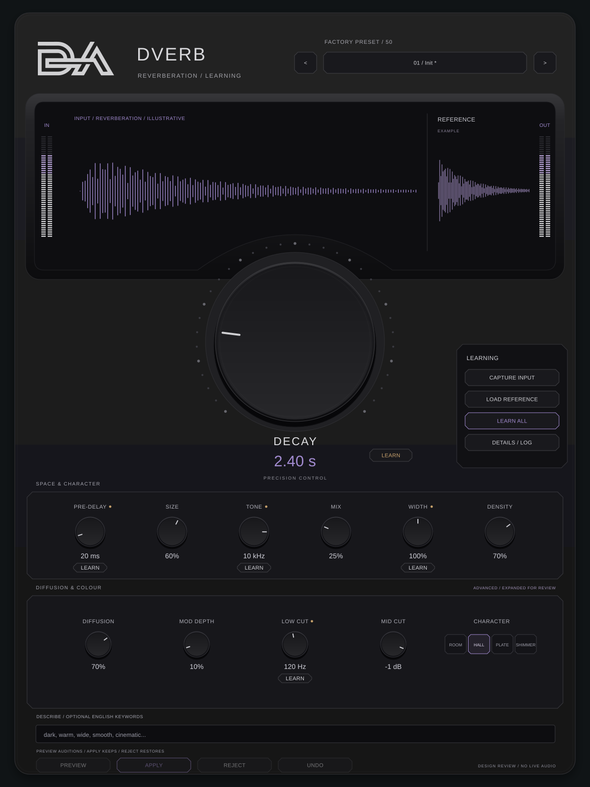
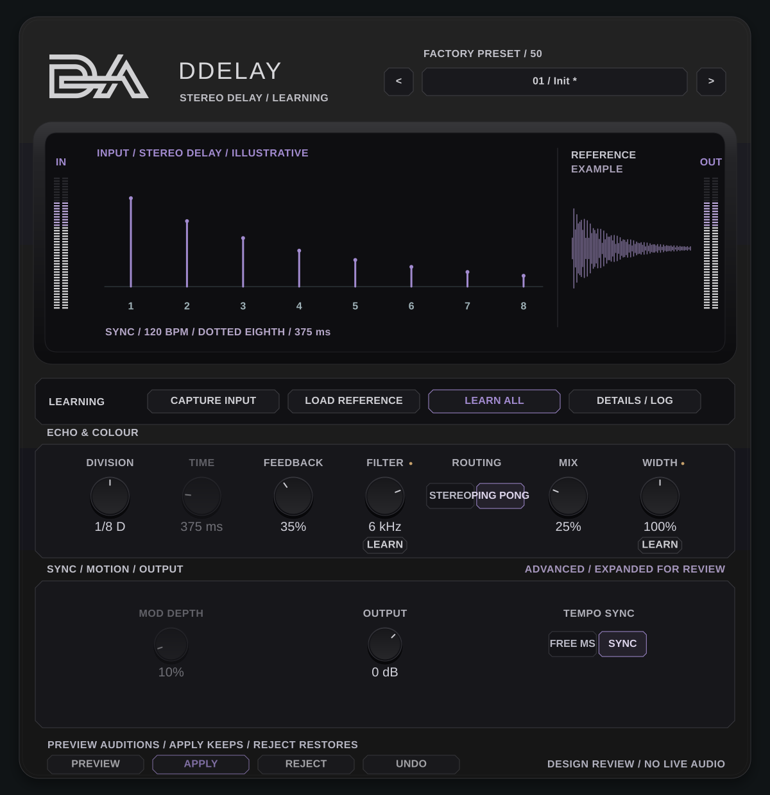
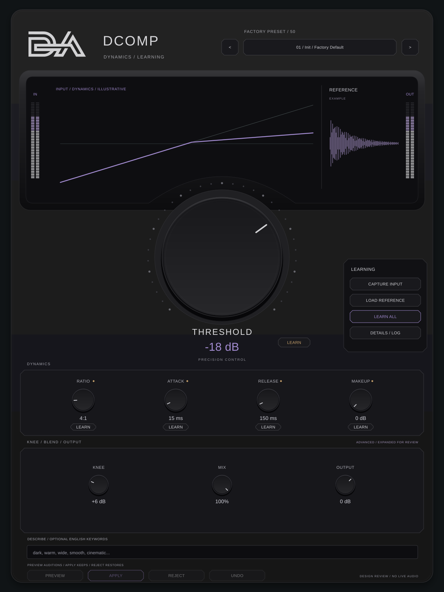
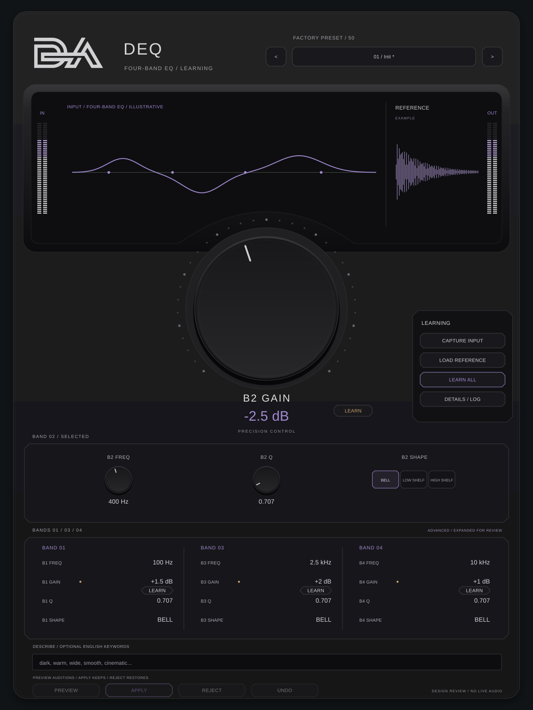
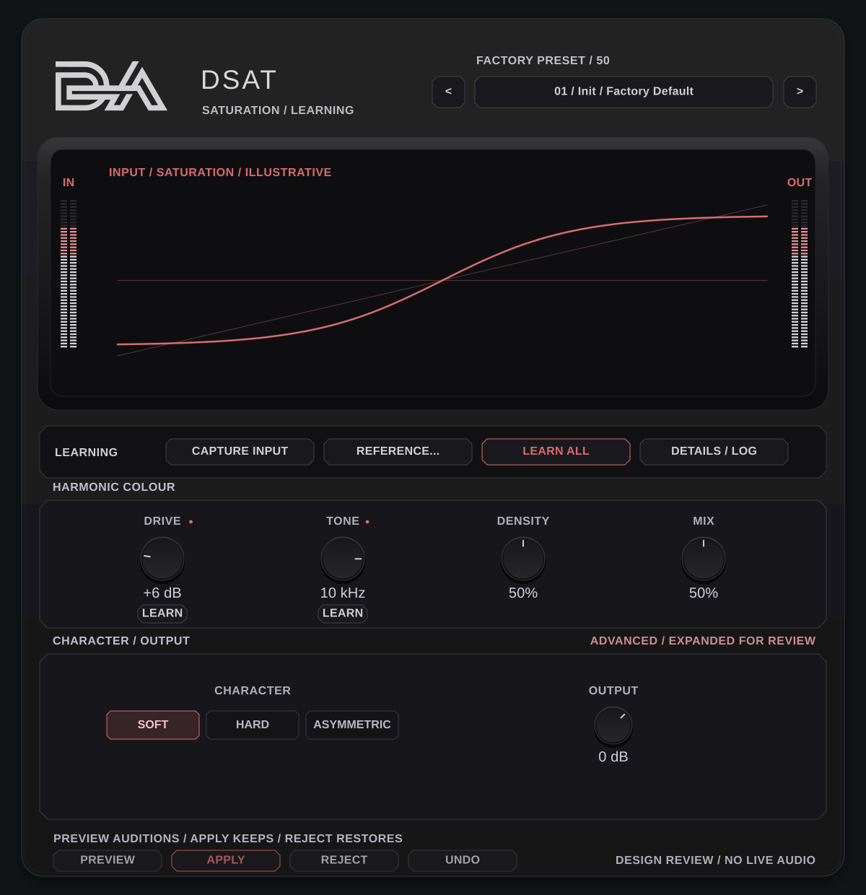
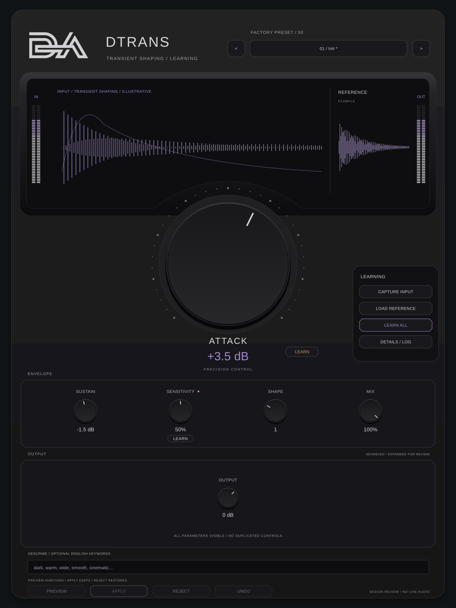
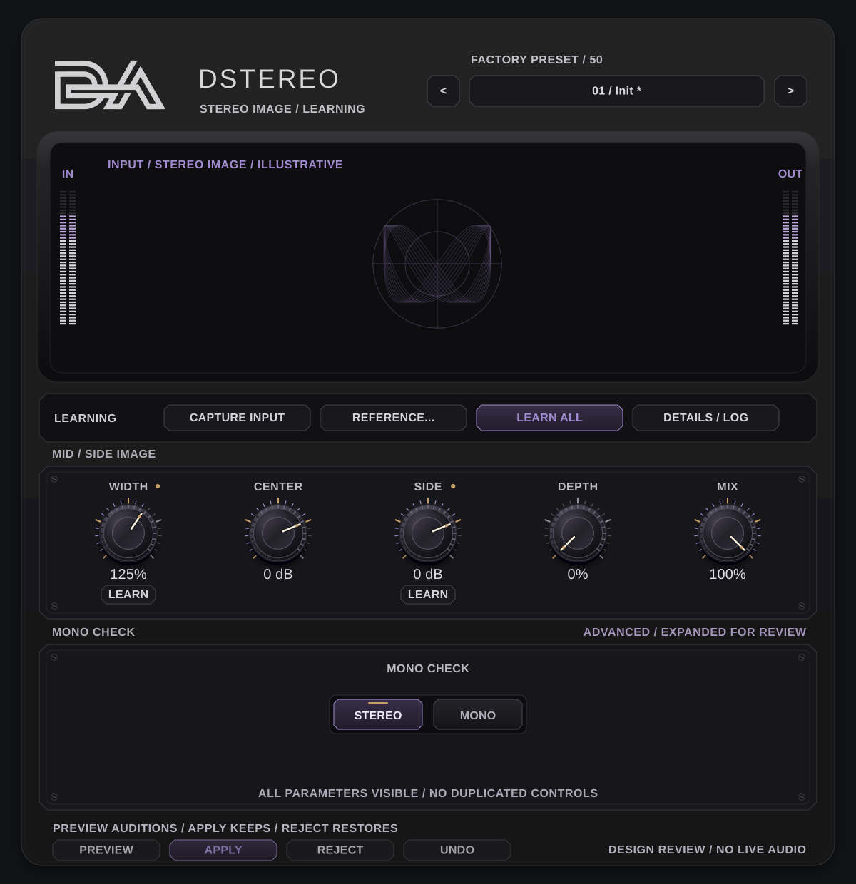
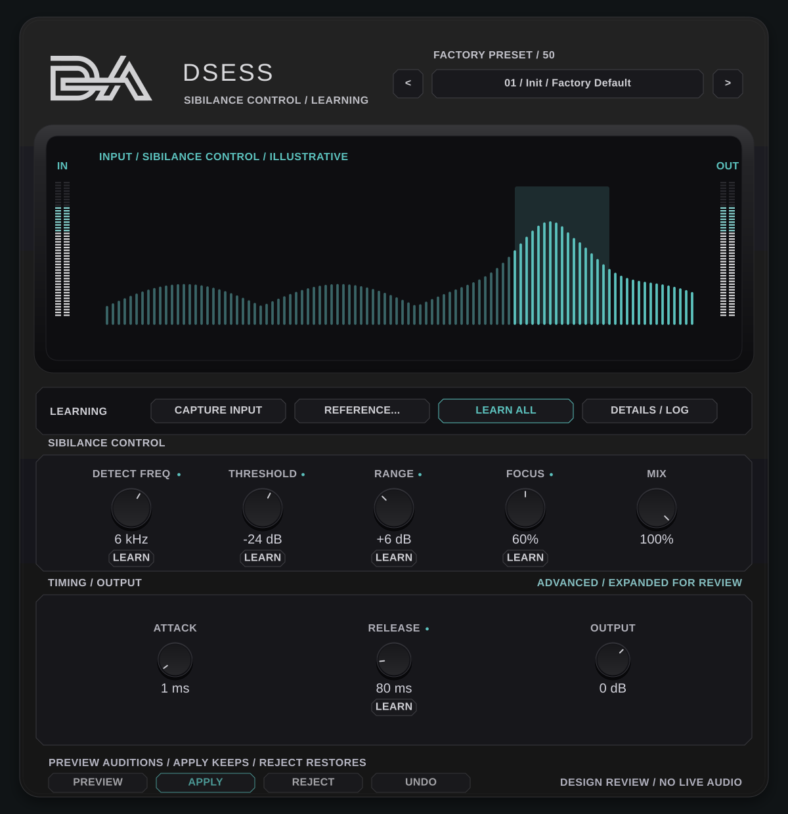
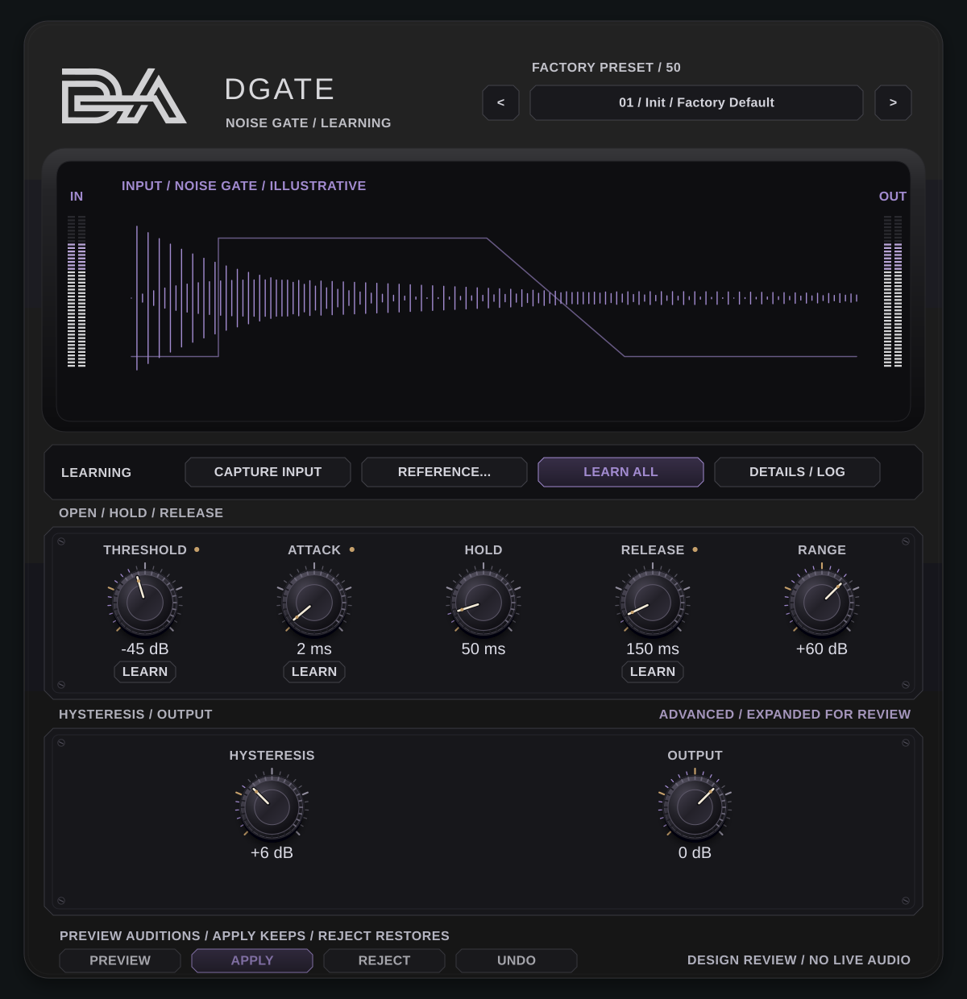
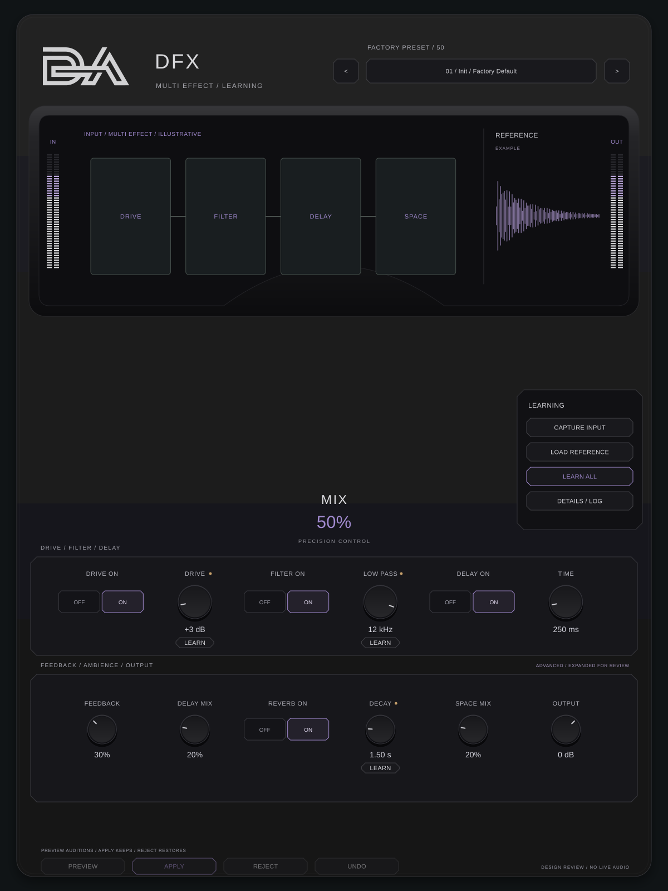

DVerb

همین مرجع نهایی با رنگ بنفش و کهرباییِ تصویر جدید؛ هر ده پلاگین برای بررسی، نه نسخهٔ اجرایی. کنترلهای تکراری حذف و مقدارها و واحدها اصلاح شدهاند. روی هر تصویر کلیک کنید تا SVG اصلی را در اندازهٔ کامل ببینید.









